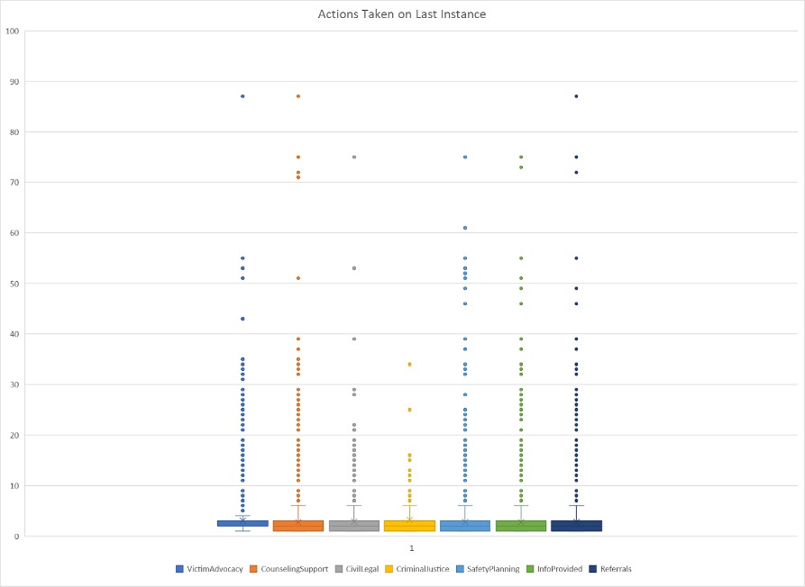

Data
We started by making a pivot table for each caller ID number so that we could find the max instance number so that we could compare this number with the actions taken on that specific call. We then created a separate table of the instance number and the actions taken. We did this so we could multiply the values of the instance column by the 1 or 0 under each action so that if the third instance was the final and Victim Advocacy help was given, we could mark a three underVictim Advocacy. We were then left with a list of numbers under each action which we used to create a box and whisker plot.
This is our box and whisker graph of the actions taken on the last instance. This type of plot manages to highlight many different details of the spread of data. In the graph below, each of the 7 actions has a rectangle with three horizontal lines. The lowest line represents the 25th percentile, the middle represents the median or 50th percentile, and finally the third represents the 75th percentile. You will also see that above and below the main rectangle there are two lines that extend out. These symbolize the extremes of the data. It is at these points that anything past is deemed an outlier to the data. This aspect of the graph is crucial due to the vast quantity of outliers.

When looking at this graph, there are two main takeaways. First is that there are a significant number of outliers for each of the seven actions. We know right away that these outliers may have a huge effect on any results we may find. Secondly we see that the 25th percentile for Victim Advocacy is higher than the other 6. This finding was what motivated us to move forward looking at solely Victim Advocacy.
This is the Table of times when Victim Advocacy actions were taken for each CT SafeConnect Region regardless of instance number. We decided not to focus on instance numbers to highlight the regions that use this action more than others. We then proceeded to “normalize” these sums for each region. This means that we accounted for the various populations per region and calculated the number of instances per 100,000 people for each region
| Region |
Sum of
Victim Advocacy |
Sum of
Population |
Instances of Victim
Advocacy per
100,000 People |
| Ansonia Region |
717 |
122,124 |
587 |
| Bridgeport Region |
2257 |
322,564 |
700 |
| Danbury Region |
712 |
231,768 |
307 |
| Enfield Region |
645 |
106,833 |
604 |
| Hartford Region |
4611 |
660,846 |
698 |
| Killingly Region |
552 |
82,6811 |
668 |
| Mansfield Region |
494 |
84,321 |
586 |
| Meriden Region |
1144 |
133,419 |
857 |
| Middletown Region |
958 |
163,053 |
588 |
| New Britain Region |
1741 |
236,239 |
737 |
| New Haven Region |
3893 |
449,748 |
866 |
| New London Region |
1284 |
267,390 |
467 |
| Stamford Region |
1652 |
379,279 |
436 |
| Torrington Region |
533 |
106,701 |
500 |
| Waterbury Region |
1837 |
228,109 |
805 |
| Grand Total |
23660 |
3,452,951 |
685 |
Now we can look at a normalized version of the Victim Advocacy per region making it easier to compare these numbers. We used these numbers and graphed a map of each region so that we can visualize the changes from region to region.
Our map above highlights where Victim Advocacy actions are more likely to be taken per capita. The Meriden, New Haven, and Waterbury regions appear to be most likely to do this. Inversely, the Danbury, Stamford, and New London Regions have the lowest numbers per capita as we previously mentioned.
While it is apparent in the graph that victim advocacy may help ending callers with higher instance numbers, there are many reasons why this might not be true. We started this project in the attempt to see which action on the last instance led to it being the last instance. There however could have been any number of things happening outside this data set that led to a cease in calls for any person. Similarly, just because a call was the last one that was recorded, does not mean it will be the last call ever.
To conclude, we hope that call centers are given advice to utilize the Victim Advocacy actions in hopes it will solve a problem for higher instance callers, specifically in the Danbury, Stamford, and the New London regions.
If you or a loved one is struggling with domestic abuse or are looking for help reach out at any one of these contact methods
Phone Call: 1-888-774-2900
Email: safeconnect@ctcadv.org
Text: 1-888-774-2900
Live Chat: Link available at https://ctsafeconnect.com